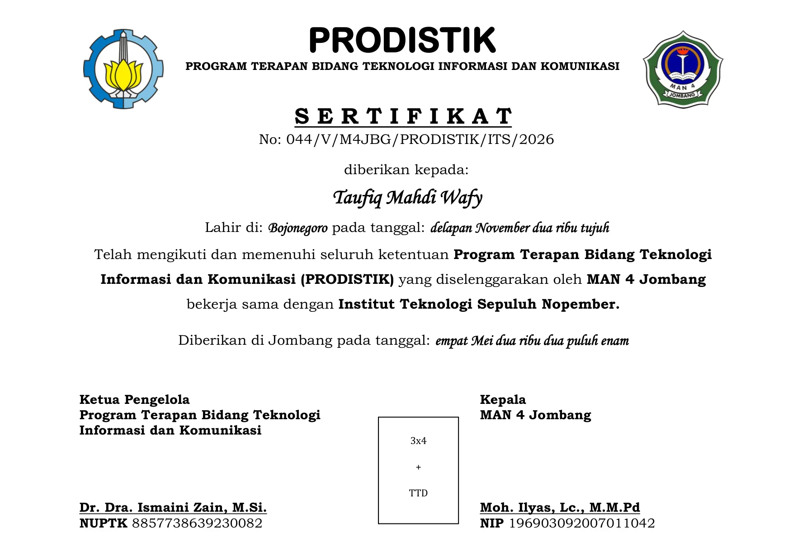
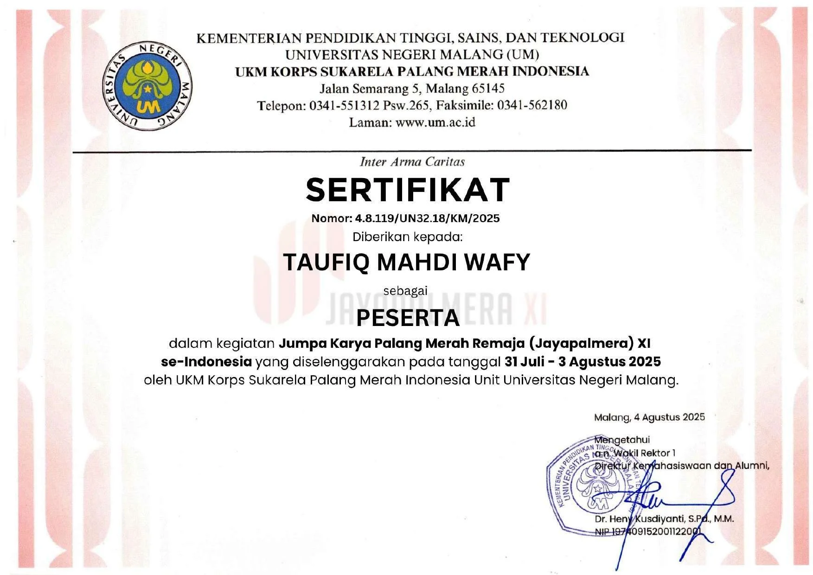
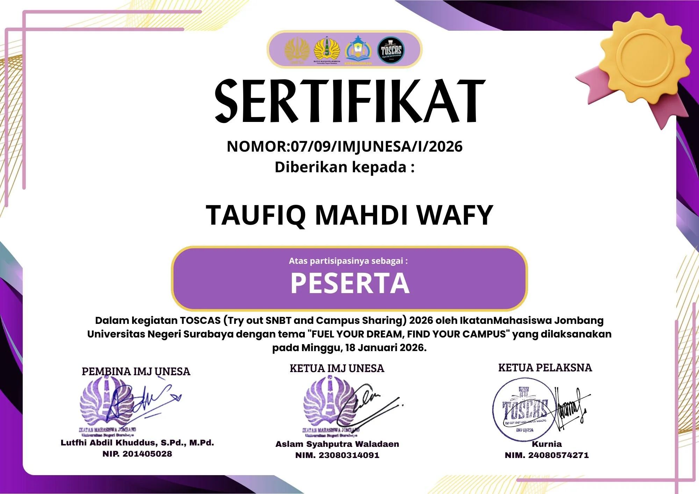

NIM: 26050974056
S1 Pendidikan Teknologi Informasi (PTI 2026D)
Kelompok 17_Subnet • Ameliorer 11 UNESA
Jombang / Surabaya, Jawa Timur
Mahasiswa S1 Pendidikan Teknologi Informasi Universitas Negeri Surabaya (UNESA). Berpengalaman dalam administrasi organisasi, tata kelola persuratan, notulensi rapat, dan pengarsipan digital di lingkungan sekolah dan pesantren.
Aplikasi Progressive Web App (PWA) pencatatan keuangan pribadi ultra-ringan dengan latensi sub-25ms dan otomasi penerimaan bukti struk belanja berbasis OCR melalui WhatsApp.
Fitur & Arsitektur Utama:
Otomasi pencatatan transaksi instan dari pesan chat WhatsApp via wameow bridge dan Vision OCR.
Integrasi backend performa tinggi dengan FastAPI, model data Pydantic, dan database SQLite terindeks.
Tampilan dashboard analitik visual pengeluaran bulanan dan manajemen multi-dompet yang responsif.
FastAPI • Cloudflare Worker • SSO Google UNESA • Caddy
Sistem pemungutan suara resmi satu angkatan Informatika UNESA 2026 untuk menentukan pilihan bahan baju angkatan (American, Japan, Nagata Drill) secara transparan dan aman.
Fitur & Arsitektur Utama:
Autentikasi ketat akun kampus SSO UNESA (@mhs.unesa.ac.id) untuk menjamin 1 mahasiswa 1 suara sah.
Rekapitulasi perolehan suara real-time dengan audit log dan pencegahan manipulasi pemungutan suara.
Deployment handal di sub-domain resmi angkatan (informatics26.my.id/vote) dengan Cloudflare CDN.
Gerbang proxy AI redundan berlatensi rendah yang memadukan puluhan provider model kecerdasan buatan dengan mekanisme failover otomatis dan token-saving routing.
Fitur & Arsitektur Utama:
Failover otomatis lintas provider upstream ketika terjadi limit kuota atau timeout koneksi.
Simulator interaktif berbasis web untuk memvisualisasikan algoritma penjadwalan proses sistem operasi (FCFS, SJF, Round Robin, Priority Scheduling) beserta diagram Gantt.
Fitur & Arsitektur Utama:
Visualisasi diagram Gantt real-time dari timeline eksekusi CPU dan antrean status proses.
Kalkulasi otomatis metrik performa: Average Waiting Time (AWT) dan Turnaround Time (TAT).
Desain interaktif untuk media pembelajaran praktikum sistem operasi bagi mahasiswa informatika.
Sistem OperasiScheduling QueueGantt ChartTypeScriptVite SPA
Pengalaman Organisasi
Pengalaman dalam kesekretariatan, persuratan, dan kehumasan.
2025 - 2026Organisasi Resmi
Sekretaris 1
Language Commission — Al-Madienah Islamic Boarding School
Memimpin tata kelola administrasi tahunan organisasi dan koordinasi lintas divisi program bahasa santri.
Tanggung Jawab & Kontribusi Utama:
Memimpin tata kelola persuratan dinas dan perizinan resmi organisasi.
Merancang dan menerapkan digitalisasi master pengarsipan dokumen dan sertifikat.
Kepanitiaan acara dan kegiatan yang pernah dijalankan.
2025 & 2026Kepanitiaan Event
Sekretaris 1 (2 Periode Berturut-turut)
Kepanitiaan Language Fair — Al-Madienah Islamic Boarding School
Master administrator festival bahasa tingkat pelajar se-Jawa Timur.
Cakupan Kerja & Pencapaian:
Mengelola master administrasi festival: surat perizinan instansi, undangan juri, dan delegasi peserta.
Merekapitulasi database pendaftaran peserta kompetisi se-Jawa Timur secara digital.
Menyusun proposal sponsorship, teknis rundown acara, dan penerbitan sertifikat digital.
Sekretaris 1Tingkat Jawa TimurMaster AdministrasiProposal & Rundown
2025 & 2026Kepanitiaan Event
Sekretaris 1 (2 Edisi: Vol. 7 & Vol. 8)
Kepanitiaan Khitobah Kubro — Al-Madienah Islamic Boarding School
Penanggung jawab administrasi dan legalitas kompetisi pidato publik santri.
Cakupan Kerja & Pencapaian:
Menyiapkan berkas perizinan pesantren, berita acara dewan juri, dan lembar penilaian lomba.
Mengoordinasikan alur persuratan resmi kepada dewan pembimbing dan pengasuh pondok.
Menyusun Laporan Pertanggungjawaban (LPJ) kegiatan secara menyeluruh pasca acara.
Sekretaris 1Berita Acara JuriLegalitas PesantrenPenyusunan LPJ
Achievement
Sertifikasi & Prestasi
Sertifikasi pelatihan, partisipasi kegiatan, dan penghargaan.

2026Sertifikat Pelatihan & Keahlian
Sertifikat Program Terapan TIK (PRODISTIK ITS)
PRODISTIK Institut Teknologi Sepuluh Nopember (ITS) Surabaya & MAN 4 Jombang
Sertifikasi keahlian terapan bidang Teknologi Informasi dan Komunikasi dengan kompetensi pemrograman spreadsheet, komputasi terapan, dan administrasi digital perkantoran.
PRODISTIK Institut Teknologi Sepuluh Nopember (ITS) Surabaya
Penghargaan sebagai Finalis Lomba Pemrograman Excel PROCOMMIT V13 Tingkat Provinsi Jawa Timur yang diselenggarakan oleh PRODISTIK ITS Surabaya.
Finalis Jawa TimurPemrograman ExcelPROCOMMIT V13Analisis Data

2025Sertifikat Prestasi & Pelatihan
Delegasi Jayapalmera XI Tingkat Nasional
KSR PMI Unit Universitas Negeri Malang (UM)
Sertifikat partisipasi sebagai delegasi resmi kontingen dalam Jumpa Karya Palang Merah Remaja (Jayapalmera) XI Tingkat Nasional di Universitas Negeri Malang.
Tingkat NasionalPMR WiraKepalangmerahanDelegasi Resmi

2026Sertifikat Partisipasi Akademik
Peserta Try Out SNBT & Campus Sharing (TOSCAS) 2026
Ikatan Mahasiswa Jombang Universitas Negeri Surabaya (IMJ UNESA)
Sertifikat kepesertaan dalam Try Out Nasional SNBT dan Campus Sharing (TOSCAS) 2026 yang diselenggarakan oleh Ikatan Mahasiswa Jombang UNESA.
IMJ UNESATry Out SNBTPartisipasiAkademik
Arsip Administrasi
2025 - 2026Sertifikat & Rekam Jejak Kepanitiaan
Sekretaris 1 Kepanitiaan Language Fair (2 Periode: 2025 & 2026)
Al-Madienah Islamic Boarding School
Memimpin tata kelola administrasi master festival kebahasaan tingkat Jawa Timur: perizinan dinas, korespondensi delegasi, undangan juri kehormatan, dan rekapitulasi data ratusan peserta.
Sekretaris 1Festival Jawa TimurMaster AdministrasiPerizinan & LPJ
Mengelola persuratan birokrasi pesantren, berita acara dewan juri, draft proposal, dan Laporan Pertanggungjawaban (LPJ) resmi pada dua edisi berturut-turut.
Sekretaris 1Kompetisi Pidato PublikNotulensi & Berita AcaraLPJ Resmi
Pendidikan
2026 - Sekarang
S1 Pendidikan Teknologi Informasi
Universitas Negeri Surabaya (UNESA)
Fakultas Teknik | NIM: 26050974056.
PJ (Penanggung Jawab) Mata Kuliah Basis Data (Kelas 2026D) — mengoordinasikan komunikasi akademik antara dosen pengampu dan mahasiswa satu rombel.
2023 - 2026
Madrasah Aliyah Negeri (MAN) 4 Jombang
Pondok Pesantren Mamba'ul Ma'arif Denanyar
Lulus dengan Nilai Rata-rata Ijazah 89.24.
Lulusan Program Terapan Bidang TIK (PRODISTIK) kerja sama resmi MAN 4 Jombang & ITS Surabaya.
Public RelationsKomunikasi Publik & EksternalNegosiasi & Hubungan MitraKoordinasi Tim LapanganPendampingan Delegasi
Software & Produktivitas Perkantoran
Microsoft Word (Dokumen Formal Tingkat Lanjut)Microsoft Excel (Formula Rumus, Spreadsheet, Data Analysis)Google Workspace (Docs, Sheets, Forms, Drive)Microsoft PowerPoint
Teknologi Informasi & Bahasa
Logika Komputasi & Pemrograman DasarSistem Basis Data Relasional (SQL)Administrasi Sistem OperasiBahasa Indonesia (Native)Bahasa Inggris (Aktif)